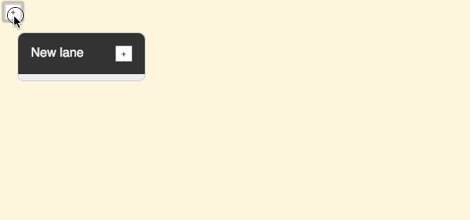
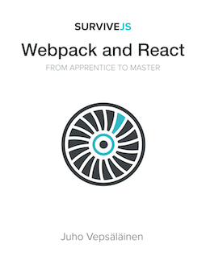

Learn Webpack and React
SurviveJS will take you from apprentice to master


From the blog:SurviveJS - Webpack - v1.8
SurviveJS - React
 Facebook's React powers an increasing amount of sites. There is a good reason for this. It simplifies frontend development greatly.
Facebook's React powers an increasing amount of sites. There is a good reason for this. It simplifies frontend development greatly.
Combined with Webpack, a bundling tool, you have a powerful frontend development environment in your hands. The SurviveJS effort consists of two books that help you to adopt these technologies. They are available as a bundle.
 SurviveJS - React shows you how to build a simple Kanban. The idea is that if you can build a simple application, you can probably build something more complex after that. The first application is always the hardest.
SurviveJS - React shows you how to build a simple Kanban. The idea is that if you can build a simple application, you can probably build something more complex after that. The first application is always the hardest.
In addition to fundamental React knowledge, you will pick up design techniques as you develop the application step by step and learn to understand it in detail.
The Kanban Project
Once you have completed the project, you will end up with something like this:

Even though the application looks simple, it's complex enough to illustrate potential problems such as reference handling.
Psst. You can try out the application online.
The book is based on a boilerplate. If you want to understand the techniques used in the boilerplate itself, check out the Webpack book (scroll down to learn more). This book is all about React.
While implementing the Kanban step by step, you will pick up basic ideas of how to compose your application, how to manage data related concerns, how to style your application, how to implement drag and drop. Those are just few topics of the many covered.
Even if you know React well already, there might be handy ideas to pick up. The book effort started early 2015 and has seen steady releases since. Each release has improved the book somehow as the React ecosystem keeps on changing.
SurviveJS is Community Driven
SurviveJS is a community driven effort. There's a free edition that contains most of the content. You can also check out the project at GitHub. GitHub contains the associated source and a way for you to send feedback. I am also available through Gitter chat if you have more direct questions.
Getting the Book
Even though SurviveJS is community driven, the effort still needs to be funded somehow. This is the reason why Leanpub/Amazon buyers get access to exclusive content. Currently this means bonus chapters on typing and testing. The Leanpub version comes in pdf, epub, and mobi formats (no DRM).
The income goes back to pushing the effort further. The goal here is not to make the maximum amount of money. It's about giving back to the community given the community enables all this. And as you enable the effort, you get more material. Fair deal!
You can support creation of new content by purchasing a digital copy of the book. If you want something more personal (training, consulting), contact me personally and I'll see what I can do.
The book is freely available under CC BY-NC-ND license.
What are the prerequisites?
I expect you know the basics of JavaScript and Node.js. Some experience in ES6 won't hurt. Plenty of patience is needed as there's a lot to learn.
If you get stuck, remember to check out the Gitter chat.
SurviveJS - Webpack
 Originally SurviveJS - Webpack was a part of the original book. Eventually I realized Webpack, the bundling tool, deserves a book of its own. This is that book.
Originally SurviveJS - Webpack was a part of the original book. Eventually I realized Webpack, the bundling tool, deserves a book of its own. This is that book.
Just like the first book, this has evolved organically as well. The early part of the book explains why Webpack is needed, shows you how to develop Webpack configuration of your own step by step, and then moves onto more advanced topics.
I chose an approach that allows me to discuss one technique at a time. This makes the book handy for reference.
The book covers actually more than just Webpack. You will learn also about the surrounding ecosystem. This means you will learn to improve the quality of your code using tools such as ESLint. There are also React specific tips given this book originates from the first one.
Getting the Book
Just like the React one, there's a free edition available. You can support the effort by purchasing a digital copy of the book. About a third of the income goes to Tobias Koppers, the author of Webpack. This is my way of saying thanks and supporting his effort.
There's also a Gitter chat. You can check out the project at GitHub as well.
What are the prerequisites?
I expect you know Node.js and JavaScript on a basic level. The book doesn't use ES6 features in any notable manner. Webpack is complex enough without so it's better to keep this simple.
SurviveJS - Webpack and React - Amazon Edition
 The original book that started this all culminated in an Amazon edition. It was my way of pushing the book quality forward as a printed edition has low tolerance for mistakes.
The book version is still available. Obviously it is out of sync with the current books. But it is there if you want it. The eventual plan is to do Amazon editions of the new books as well.
If you bought the paper version before June 2016, get in touch and I'll hook you up with the digital versions of the book. This way you get up to date information.
You don't have to be alone in your journey. Community support is available through gitter. You can also contact me directly.
About the Author

He has developed colorjoe and reactabular in addition to many other libraries.
He started the SurviveJS effort early 2015 and has been pushing it forward ever since!
From the blog:SurviveJS - Webpack - v1.8